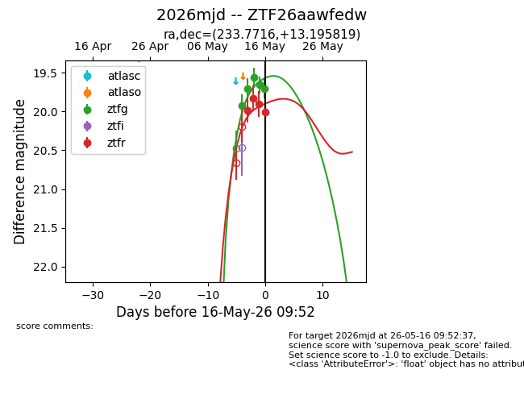
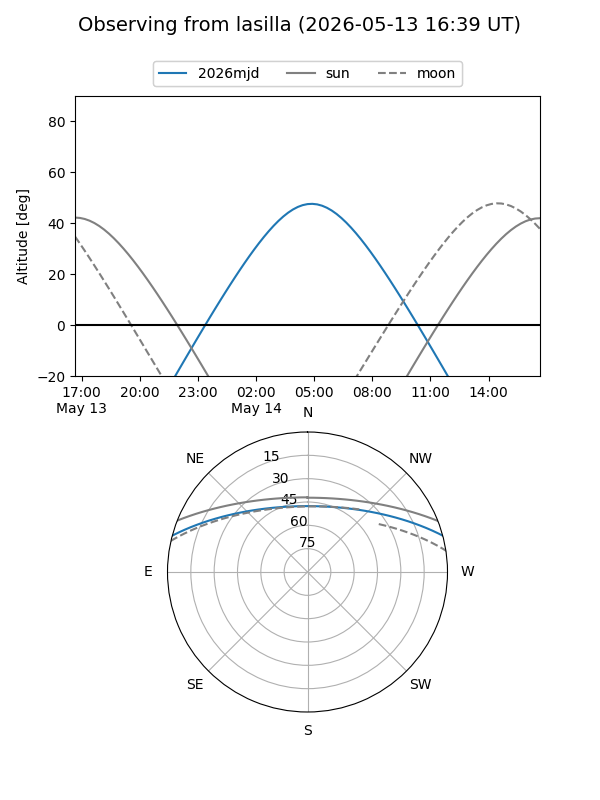
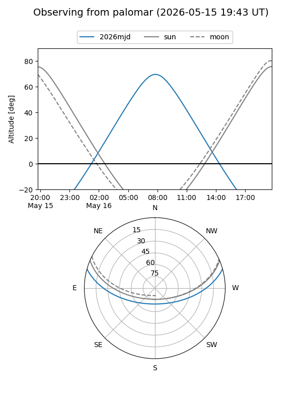
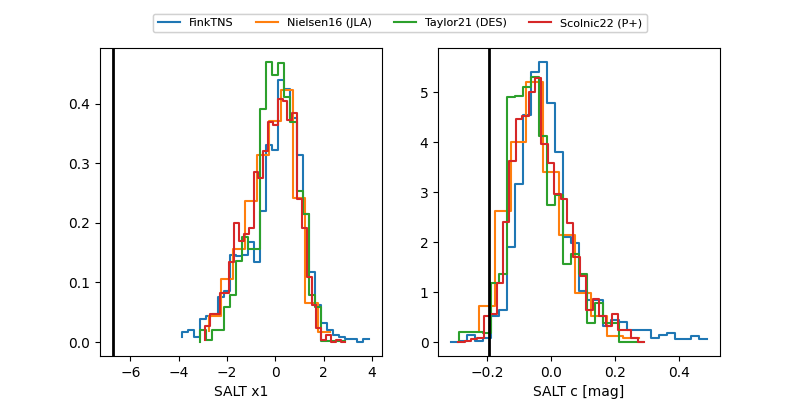

2026mjd
Target 2026mjd at 2026-05-16 09:54
Aliases and brokers:
FINK: link
Lasair: link
ALeRCE: link
TNS: link
YSE: link
alt names
ZTF26aawfedw (ztf,fink_ztf)
2026mjd (tns,yse)
Coordinates:
equatorial (ra, dec) = 233.7716,+13.19582
equatorial (HMS+DMS) = 15:35:05.19,+13:11:44.95
galactic (l, b) = (21.2073,+49.36821)
Flags:
Photometry:
last ztfg=19.70, ztfr=20.01
5 ztfg, 4 ztfr detections
Lightcurve

Visibility


Additional plots
